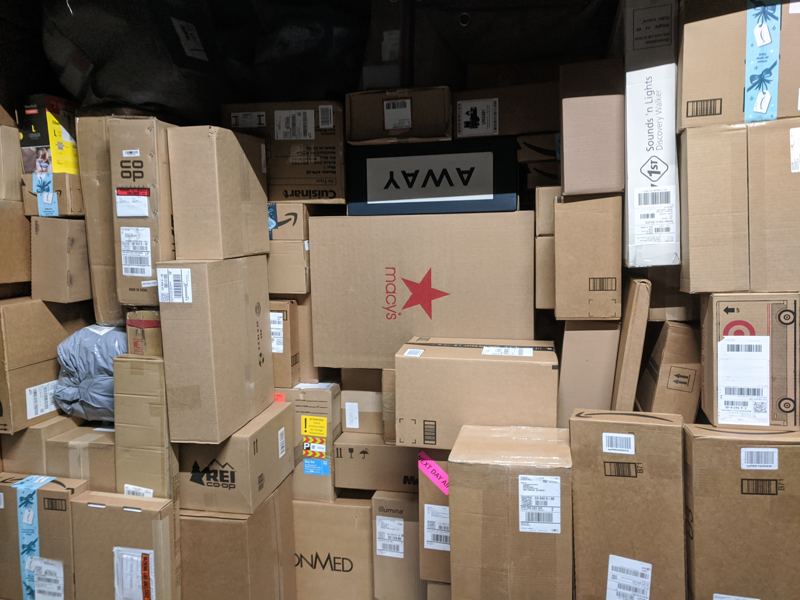

Aaron Martinez
Born in Los Angeles and moved to the Inland Empire in Fontana where I attended Henry J. Kaiser High School. Once I graduated, I began to attend Chaffey College over that same summer. That fall I applied to the United Parcel Service (UPS) while still attending school and eventually began to work as a loader for air cargo planes. I started college as undeclared, so I temporarily picked up more work at a local warehouse where I'd take inventory, audit, and load goods onto tractor trailers. Just before graduating I took part in psychology research at Chaffey in which students took a survey covering whether people with similar values or interests were more likely to be partners. There we found that parents liking their son or daughter's partner was significant if they were similar to them. Once I had gathered all my units for transfer, I applied to universities and decided to go to the University of California Riverside (UCR). Since then I have been accepted and have applied to Gamma Beta Phi, The Society for Collegiate Leadership and Achievement, and the International Honor Society in Psychology (Psi Chi). Currently I plan on getting research experience/internships and graduating in March of 2021.
I have been trained to handle hazmats and dry ice based on classifications and seperating combinations that prove to be a danger to flight operations. In addition to this I have had other responsibilities at work such as tutoring new hires, writing audits for air cargo, identifying whether or not an air cargo carrier is fit for transport, controlling the flow of traffic within my area, and sorting through and halting the progress of questionable packages or cargo that is forbidden for flight operations. If my workload is light I will go around to see if any of my coworkers need assistance clearing up their work flow or need help with cargo in any other way. At times I am able to temporarily fill the supervisor role with training I have had during a brief period of time and have learned multiple jobs in different areas in the hub.
Proficient with microsoft office applications such as word, powerpoint, and excel while having a wide knowledge of computer use in general. Experienced in using SPSS which is a statistical program that I used while doing research in psychology in my time at Chaffey College to not only use the basic outlines of conducting research but to be able to produce data that can be quantified. When working in groups I take initiative to get not only my end of a project done but to assist in other aspects someone may need help in. Important to maintain a positive attitude when working with others and can adapt to changing conditions based on what is being asked of me.
Experience
Package Handler
• Load air cargo planes
• Identify hazmat materials or forbidden air cargo
• Track dry ice/hazmat combinations amount for safe transport
Toys for Tots
• Responsible for distributing gifts to children in need
• Managed inventory and did volunteer kitchen work
Education
UC Riverside
Portfolio
